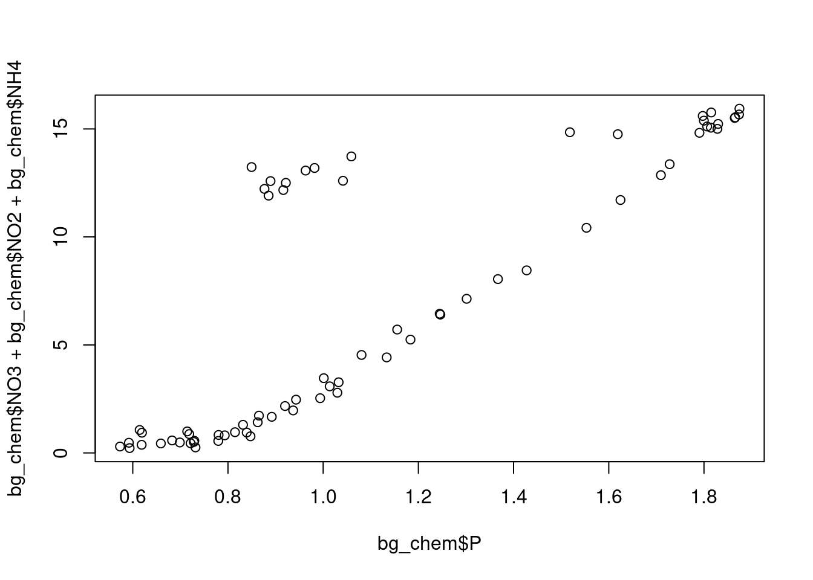

library(readr)Literate Analysis
##Introduction
About the data
This data is from the North Pole Environmental Observatory Bottle Chemistry, collected in April or May 2000 to 2014.
You can find the data at [this link] (https://arcticdata.io/catalog/view/doi:10.18739/A25T3FZ8X)
Setup
Read data
bg_chem <- read_csv("~/training_shinbrot/data/data/BGchem2008data.csv")Rows: 70 Columns: 19
── Column specification ────────────────────────────────────────────────────────
Delimiter: ","
chr (1): Station
dbl (16): Latitude, Longitude, Target_Depth, CTD_Depth, CTD_Salinity, CTD_T...
dttm (1): Time
date (1): Date
ℹ Use `spec()` to retrieve the full column specification for this data.
ℹ Specify the column types or set `show_col_types = FALSE` to quiet this message.Analysis
str (bg_chem)spc_tbl_ [70 × 19] (S3: spec_tbl_df/tbl_df/tbl/data.frame)
$ Date : Date[1:70], format: "2008-03-21" "2008-03-21" ...
$ Time : POSIXct[1:70], format: "1899-12-31 21:56:46" "1899-12-31 21:56:46" ...
$ Station : chr [1:70] "73N,140W" "73N,140W" "73N,140W" "73N,140W" ...
$ Latitude : num [1:70] 73 73 73 73 73 ...
$ Longitude : num [1:70] -140 -140 -140 -140 -140 ...
$ Target_Depth : num [1:70] 20 60 85 190 310 20 60 85 190 310 ...
$ CTD_Depth : num [1:70] 15.1 60.6 85.7 191.4 309.3 ...
$ CTD_Salinity : num [1:70] 26.1 29.2 31.4 33.1 34.6 ...
$ CTD_Temperature: num [1:70] -1.423 -0.934 -0.146 -1.478 0.258 ...
$ Bottle_Salinity: num [1:70] 26.1 29.2 31.4 33.1 34.6 ...
$ d18O : num [1:70] -3.5318 -3.1857 -2.1087 -1.4293 0.0847 ...
$ Ba : num [1:70] 72.4 82.8 60.6 76.1 -99 ...
$ Si : num [1:70] 2.46 2.82 7.54 36.58 8.06 ...
$ NO3 : num [1:70] -0.0311 0.026 2.6964 15.8538 12.1601 ...
$ NO2 : num [1:70] 0.0562 0.1726 0.0217 0.0246 -0.0013 ...
$ NH4 : num [1:70] 0.1974 0.0558 0.0691 0.0591 0.0653 ...
$ P : num [1:70] 0.593 0.732 1.03 1.875 0.877 ...
$ TA : num [1:70] 1895 2094 2194 2268 2296 ...
$ O2 : num [1:70] 9.25 -99 -99 -99 6.66 ...
- attr(*, "spec")=
.. cols(
.. Date = col_date(format = ""),
.. Time = col_datetime(format = ""),
.. Station = col_character(),
.. Latitude = col_double(),
.. Longitude = col_double(),
.. Target_Depth = col_double(),
.. CTD_Depth = col_double(),
.. CTD_Salinity = col_double(),
.. CTD_Temperature = col_double(),
.. Bottle_Salinity = col_double(),
.. d18O = col_double(),
.. Ba = col_double(),
.. Si = col_double(),
.. NO3 = col_double(),
.. NO2 = col_double(),
.. NH4 = col_double(),
.. P = col_double(),
.. TA = col_double(),
.. O2 = col_double()
.. )
- attr(*, "problems")=<externalptr> summary (bg_chem) Date Time Station
Min. :2008-03-21 Min. :1899-12-31 00:19:50.00 Length:70
1st Qu.:2008-03-23 1st Qu.:1899-12-31 20:20:40.00 Class :character
Median :2008-03-26 Median :1899-12-31 20:52:24.00 Mode :character
Mean :2008-03-25 Mean :1899-12-31 17:52:13.01
3rd Qu.:2008-03-28 3rd Qu.:1899-12-31 22:43:57.25
Max. :2008-03-30 Max. :1899-12-31 23:50:29.00
Latitude Longitude Target_Depth CTD_Depth
Min. :72.05 Min. :-163.7 Min. : 20.0 Min. : 15.13
1st Qu.:72.97 1st Qu.:-153.3 1st Qu.: 60.0 1st Qu.: 60.34
Median :74.05 Median :-149.8 Median : 85.0 Median : 85.78
Mean :74.04 Mean :-148.1 Mean :123.8 Mean :125.42
3rd Qu.:75.26 3rd Qu.:-140.3 3rd Qu.:190.0 3rd Qu.:192.66
Max. :76.32 Max. :-136.5 Max. :430.0 Max. :442.17
CTD_Salinity CTD_Temperature Bottle_Salinity d18O
Min. :25.50 Min. :-1.6843 Min. :25.50 Min. :-3.7310
1st Qu.:30.17 1st Qu.:-1.4906 1st Qu.:30.17 1st Qu.:-2.9615
Median :31.65 Median :-1.2600 Median :31.65 Median :-2.0444
Mean :31.45 Mean :-0.9647 Mean :31.45 Mean :-2.0166
3rd Qu.:33.08 3rd Qu.:-0.4777 3rd Qu.:33.08 3rd Qu.:-1.4939
Max. :34.82 Max. : 0.7008 Max. :34.82 Max. : 0.2073
Ba Si NO3 NO2
Min. :-99.00 Min. : 2.460 Min. :-0.0499 Min. :-0.00130
1st Qu.: 64.08 1st Qu.: 3.915 1st Qu.: 0.7849 1st Qu.: 0.01285
Median : 69.68 Median : 8.424 Median : 4.7488 Median : 0.02475
Mean : 60.95 Mean :13.292 Mean : 6.8571 Mean : 0.04766
3rd Qu.: 72.25 3rd Qu.:20.985 3rd Qu.:13.0425 3rd Qu.: 0.04469
Max. : 86.09 Max. :36.577 Max. :15.8538 Max. : 0.27300
NH4 P TA O2
Min. :0.00535 Min. :0.5732 Min. : -99 Min. :-99.000
1st Qu.:0.01603 1st Qu.:0.7986 1st Qu.:2136 1st Qu.:-99.000
Median :0.03465 Median :0.9725 Median :2203 Median :-99.000
Mean :0.05853 Mean :1.1201 Mean :2089 Mean :-73.059
3rd Qu.:0.06747 3rd Qu.:1.4956 3rd Qu.:2271 3rd Qu.:-99.000
Max. :0.37390 Max. :1.8745 Max. :2312 Max. : 9.246 unique (bg_chem$Date)[1] "2008-03-21" "2008-03-22" "2008-03-23" "2008-03-24" "2008-03-25"
[6] "2008-03-26" "2008-03-27" "2008-03-29" "2008-03-30"Calculate summary statistics
nitrate <-bg_chem$NO3
nitrite <-mean(bg_chem$NO2)
amm <- mean(bg_chem$NH4)
phos <- mean (bg_chem$P)Calculate mean Redfield ratio
ratio <- mean (nitrate +nitrite +amm)/phosPlot Redfield Ratio
plot(bg_chem$P, bg_chem$NO3 + bg_chem$NO2 +bg_chem$NH4)
###Conclusion
The redfield ratio for this data is approximately 6